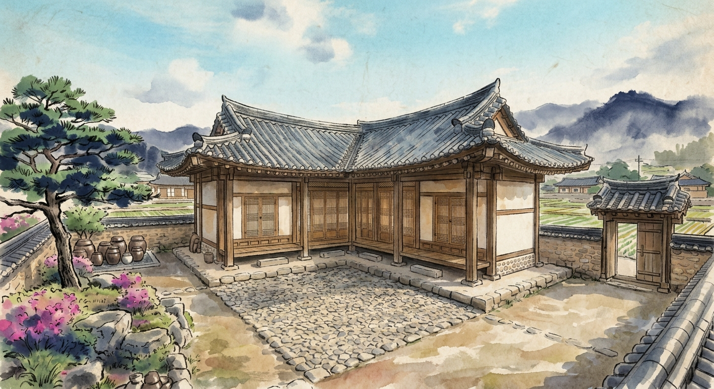
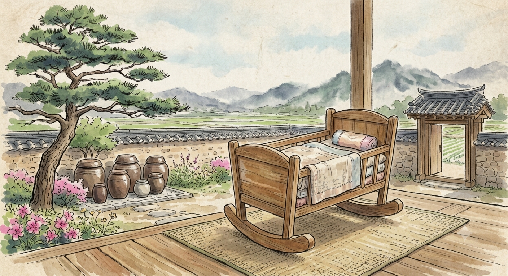
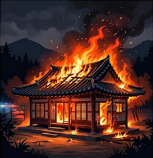

설화를 단순 재생하지 않고 사건 기록·증거·진술·시간의 흐름으로 재구성한 디지털 케이스 파일.
ONE QR / INDEX
이 QR 하나면 전체 기록을 볼 수 있습니다.
QR을 한 번만 스캔하면 INDEX가 열립니다. 이후에는 화면의 다음 기록 → 버튼으로 FILE 01부터 FILE 07까지 순서대로 확인할 수 있습니다.
NO QR REQUIRED
파일만 열어도 확인 가능
교수님께 제출한 압축 파일에서 index.html을 열면 QR 없이도 같은 흐름으로 작품을 볼 수 있습니다.
CASE OPENED
CASE SUMMARY
한 사람의 맹세가 어디까지 이어졌는가
“만약 내가 그랬다면 죽어서 천벌을 받아도 좋다.”
이 문장을 사건의 핵심 증거로 삼고, 이후의 죽음들을 시간 순서대로 추적한다. 관객은 이야기의 청자가 아니라 기록을 읽는 조사자가 된다.
CASE PROFILE
유형 살인 / 맹세 / 환생 / 연쇄적 죽음
인물 본처 · 남편 · 후처 · 후처의 아들 · 세 아들 · 부모
매체 문서 / 관계도 / 이미지 / 음성 / 타임라인
관객 사건 기록을 따라가는 조사자
ORIGINAL RECORD
설화 원문 기록
옛날에 사이가 좋은 부부가 살고 있었다. 그들에게는 자식이 없어 후처를 맞이하였다. 후처가 아들을 낳자, 본처는 그 아이를 죽이고 말았다. 관에서 본처를 불러다가 심문을 했다. 본처는 만약 자신이 그랬다면 죽어서 천벌을 받아도 좋다고 맹세하였다.
본처는 죽어서 다시 이 세상에 태어났다. 이번에는 세 명의 아들을 낳고, 네 번째 아이를 임신하게 되었다. 아기를 낳기 위해 친정으로 가는 도중에 두 아이는 냇물에 빠져 죽고, 한 아이는 뱀에게 물려 죽었다. 게다가 친정집에 화재가 일어나 부모마저 죽었고, 마침내 그녀도 죽고 말았다.
CASE BOARD
사건 전체 흐름
01 · 후처의 아들이 태어남자식이 없던 부부가 후처를 맞이한 뒤 아들이 태어난다.
02 · 본처가 아이를 죽임사건 발생. 관에서 본처를 불러 심문한다.
03 · 본처의 맹세자신이 그랬다면 죽어서 천벌을 받아도 좋다고 맹세한다.
04 · 죽음과 환생본처는 죽어서 다시 이 세상에 태어난다.
05 · 세 아들과 네 번째 임신세 명의 아들을 낳고 네 번째 아이를 임신한다.
06 · 아이들의 죽음두 아이는 냇물에 빠지고 한 아이는 뱀에게 물려 죽는다.
07 · 친정집 화재와 최종 죽음부모가 죽고, 마침내 그녀도 죽는다.
INDEX
FILE 01 / FAMILY RECORD
사건의 시작
설화를 단순 재생하지 않고 사건 기록·증거·진술·시간의 흐름으로 재구성한 디지털 케이스 파일.
FILE OPENED · 01
RECORD 01
사건 이전의 관계
“옛날에 사이가 좋은 부부가 살고 있었다.”
사건은 처음부터 파국으로 시작되지 않는다. 사이가 좋은 부부, 자식이 없는 상태, 그리고 후처의 등장으로 가족 구조가 바뀐다.
관청 기록 / 가족 구성
부부 관계: 원만
자녀: 없음
후처: 새로 맞이함
후처의 자녀: 아들 1명
RELATIONSHIP MAP / BEFORE INCIDENT
관계도
FAMILY STRUCTURE
본처기존 아내
남편부부 관계
후처새로 맞이함
후처의 아들사건 피해자

EVIDENCE A · FAMILY HOUSE / PROVIDED IMAGE
SOURCE TEXT
“그들에게는 자식이 없어 후처를 맞이하였다. 후처가 아들을 낳자…”
실제 사건을 촬영하는 대신, 집과 관계 구조를 상징 이미지로 제시한다. 다음 파일에서 ‘탄생’이 ‘사건’으로 바뀐다.
FILE FLOW · RECORD01
FILE 02 / INCIDENT REPORT
사건 발생
설화를 단순 재생하지 않고 사건 기록·증거·진술·시간의 흐름으로 재구성한 디지털 케이스 파일.
INCIDENT RECORDED
RECORD 02
후처의 아들 사망
“후처가 아들을 낳자, 본처는 그 아이를 죽이고 말았다.”
직접적인 살해 장면을 재현하지 않고, 비어 있는 요람과 사건 문서로 ‘사라진 자리’를 보여준다.
INCIDENT REPORT
피해자 후처의 아들
가해자 본처
사건 살해
확인 방식 설화 기록

EVIDENCE B · EMPTY CRADLE / PROVIDED IMAGE
EVIDENCE NOTE
빈 요람
아이의 죽음을 직접 보여주는 대신 ‘있어야 할 사람이 사라진 자리’를 보여준다. 관객은 빈 공간을 통해 사건을 상상한다.
CASE TYPOGRAPHY
VICTIM: 01 후처의 아들
사건은 한 문장으로 기록되지만, 그 문장 뒤에는 한 사람의 죽음이 있다.
FILE FLOW · RECORD02
FILE 03 / INTERROGATION
심문 기록
설화를 단순 재생하지 않고 사건 기록·증거·진술·시간의 흐름으로 재구성한 디지털 케이스 파일.
INTERROGATION · ARCHIVED
RECORD 03
심문 기록
“만약 자신이 그랬다면 죽어서 천벌을 받아도 좋다고 맹세하였다.”
사건을 ‘살해’에서 ‘맹세’의 기록으로 전환하는 장면. 작품의 중심 문장을 크게 남긴다.
INTERROGATION LOG
호출 대상: 본처
장소: 관청
질문: 사건의 사실 여부
응답: 부인 및 맹세
핵심 진술: 천벌을 받아도 좋다.
KEY STATEMENT / TYPE SPECIMEN
죽어서 천벌을 받아도 좋다.
— 본처의 심문 진술에서
AUDIO STATEMENT
제공된 실제 녹음 음성
QUESTION
무엇이 기록됐는가?
본처가 관에서 심문을 받았다는 사실.
STATEMENT
무엇이 남았는가?
‘천벌’이라는 단어가 맹세의 핵심으로 남는다.
NEXT
다음 기록
본처는 죽고 다시 이 세상에 태어난다.
FILE FLOW · RECORD03
FILE 04 / NEW LIFE
환생 기록
설화를 단순 재생하지 않고 사건 기록·증거·진술·시간의 흐름으로 재구성한 디지털 케이스 파일.
NEW RECORD FOUND
RECORD 04
죽음 이후의 새로운 기록
“본처는 죽어서 다시 이 세상에 태어났다.”
죽음이 끝이 아니라 다음 기록의 시작이 된다. 화면도 종이 기록에서 ‘NEW RECORD’ 화면으로 전환된다.
LIFE CYCLE
DEATH ↓ BIRTH
기존 생의 본처가 죽은 뒤 다시 태어난 것으로 기록된다.
SECOND LIFE / FAMILY RECORD
두 번째 삶의 가족 구조
NEW FAMILY STRUCTURE
환생한 인물이전 생: 본처
첫째 아들자녀 1
둘째 아들자녀 2
셋째 아들자녀 3
출산 / 임신 기록
아들 1명 출생
아들 2명 출생
아들 3명 출생
네 번째 아이 임신
VISUAL MOTIF
3 + 1
세 명의 아들과 아직 태어나지 않은 네 번째 아이. 다음 기록은 친정으로 향하는 길에서 발생한다.
FILE FLOW · RECORD04
FILE 05 / CHAIN OF DEATH
연쇄 사망 기록
설화를 단순 재생하지 않고 사건 기록·증거·진술·시간의 흐름으로 재구성한 디지털 케이스 파일.
CHAIN OF DEATH · 01
RECORD 05
냇물과 뱀
“아기를 낳기 위해 친정으로 가는 도중에 두 아이는 냇물에 빠져 죽고, 한 아이는 뱀에게 물려 죽었다.”
같은 이동 과정에서 세 아이의 죽음이 연속으로 발생한다. 장소와 원인을 분리해 시각화한다.
DEATH RECORD
대상 세 아들
이동 목적 아기를 낳기 위해 친정으로 이동
사망 01·02 냇물에 빠짐
사망 03 뱀에게 물림
EVIDENCE C · STREAM / PROVIDED IMAGE
EVIDENCE D · SNAKE / PROVIDED IMAGE
01·02
첫째·둘째
냇물에 빠져 죽음.
03
셋째
뱀에게 물려 죽음.
ROUTE
친정으로 이동
아기를 낳기 위해 이동하던 중.
제공된 실제 녹음 음성
FILE FLOW · RECORD05
FILE 06 / FINAL INCIDENT
최종 사건
설화를 단순 재생하지 않고 사건 기록·증거·진술·시간의 흐름으로 재구성한 디지털 케이스 파일.
FINAL INCIDENT
RECORD 06
친정집 화재와 마지막 기록
“게다가 친정집에 화재가 일어나 부모마저 죽었고, 마침내 그녀도 죽고 말았다.”
아이들의 죽음 이후 사건은 친정집으로 이동한다. 화재로 부모가 죽고, 마지막으로 그녀의 죽음이 기록된다.
FINAL INCIDENT REPORT
장소: 친정집
사건: 화재
사망자: 부모
최종 사망자: 그녀
CASE STATUS: CLOSED

EVIDENCE E · FIRE / PROVIDED IMAGE
LAST MOVEMENT
친정으로 이동출산을 위해 이동
친정집 화재부모 사망
그녀의 죽음사건의 마지막 기록
CASE CLOSURE
모든 기록이 한 사람의 죽음으로 끝난다.
기록은 여기서 끝나지만, 작품은 의미를 하나로 확정하지 않는다. 마지막 파일에서 관객이 사건을 해석한다.
FILE FLOW · RECORD06
FILE 07 / FINAL REPORT
최종 보고서
설화를 단순 재생하지 않고 사건 기록·증거·진술·시간의 흐름으로 재구성한 디지털 케이스 파일.
CASE CLOSED
FINAL REPORT
판결문이 비어 있는 사건
기록은 끝났지만, 해석은 끝나지 않는다.
앞선 파일에서 설화의 사건 관계를 모두 기록했다. 마지막에는 작품이 임의로 결론을 선언하지 않고 관객이 기록을 바탕으로 의미를 생각하게 한다.